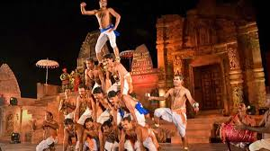

Exploring India's Culture and Heritage
Classical Dance Forms of India
Panthi is a vibrant and spiritual folk dance of Chhattisgarh, primarily performed by the Satnami community, a sect that follows the teachings of Guru Ghasidas. It is not just a form of entertainment, but a devotional expression that combines music, rhythm, and storytelling. Panthi dance is usually performed on religious occasions, especially during the birth anniversary of Guru Ghasidas and other important festivals celebrated by the Satnamis. It reflects themes of devotion, equality, and social values preached by the Guru.
Panthi is a vibrant and spiritual folk dance of Chhattisgarh, primarily performed by the Satnami community, a sect that follows the teachings of Guru Ghasidas.
Bhangra is a lively and energetic folk dance that originated in the Punjab region of India and Pakistan. It began as a celebratory dance performed by farmers during the harvest festival of Vaisakhi, which marks the beginning of the Punjabi New Year and the harvesting of wheat. Traditionally performed by men in the fields, Bhangra was a way to express joy and gratitude for a good harvest. Over time, different villages developed their own variations of the dance, and it evolved into a more structured form. In the mid-20th century, Bhangra was adapted for stage performances and became popular in cultural festivals and competitions. With the rise of the Punjabi diaspora, especially in the UK and Canada, Bhangra gained global popularity and began fusing with Western music styles like hip-hop and pop, creating a modern, dynamic version of the traditional dance. Today, Bhangra remains a symbol of Punjabi pride, energy, and cultural identity around the world.
The history of Panthi dance is closely linked to the Satnami movement founded by Guru Ghasidas in the 19th century. Guru Ghasidas was a spiritual reformer who worked against social discrimination and advocated for equality and dignity for all, especially for the oppressed. His teachings were passed on through bhajans (devotional songs), many of which became an integral part of Panthi dance. Over time, the Satnami community developed this dance form as a way to celebrate their faith, express their unity, and pass on their religious and cultural teachings.
Today, Panthi dance is not only performed during community gatherings but also featured in state and national cultural festivals, including Republic Day parades, where it represents the rich cultural heritage of Chhattisgarh. It has become a source of pride and identity for the Satnami community and a symbol of social equality and devotion. With growing recognition, Panthi dance is also being preserved and promoted by cultural organizations and government initiatives, ensuring its legacy continues for future generations.